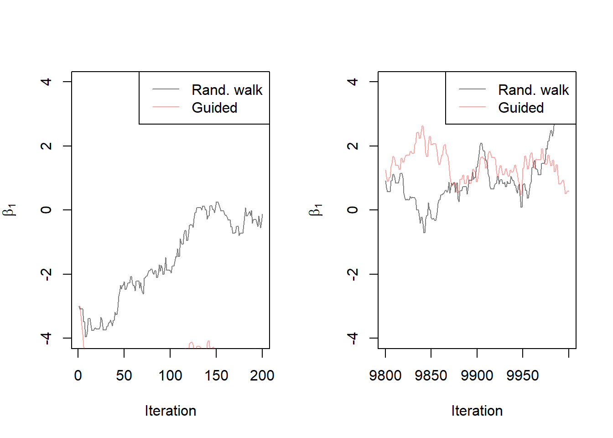
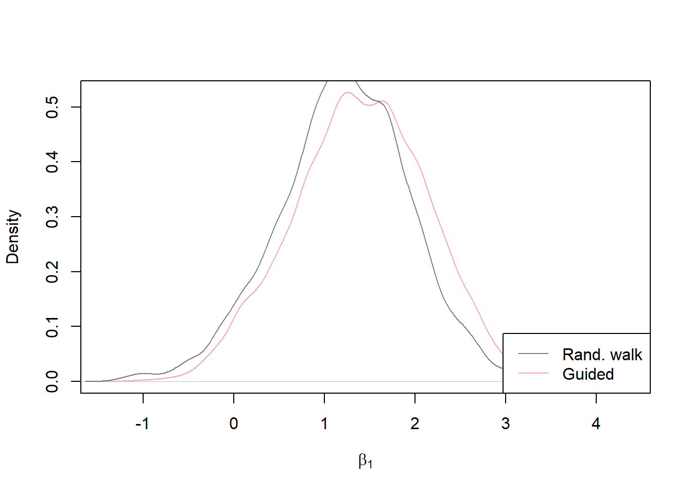
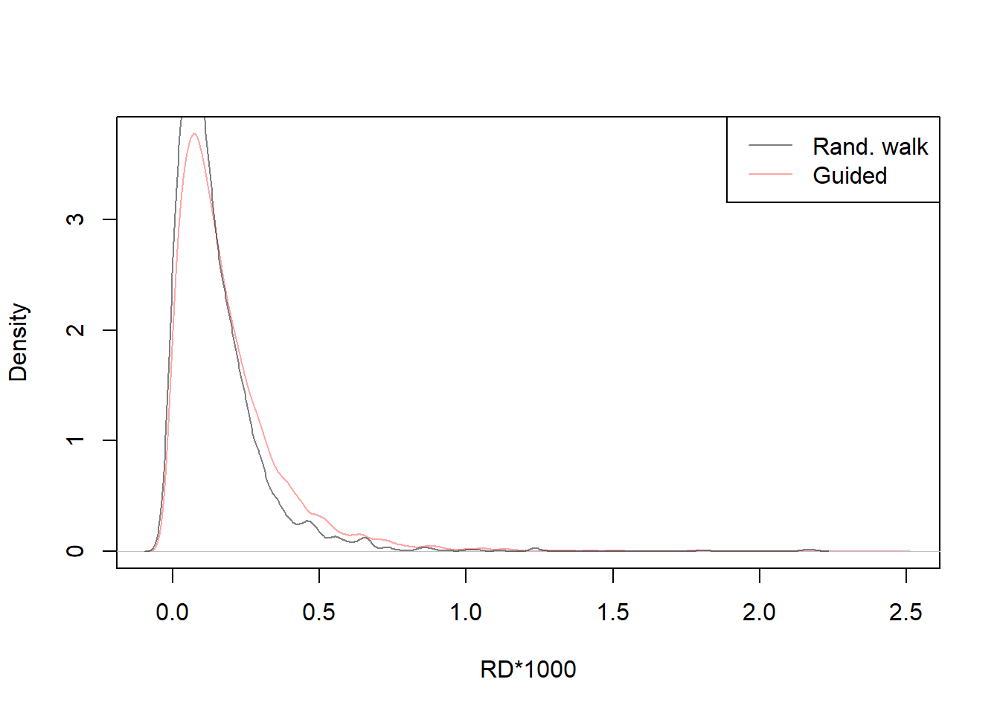

Chapter 4 Metrópolis guiada
4.1 Concepto y funcionamiento de algoritmo
El algoritmo de Paseo Guiado Metropolis es una variante del algoritmo Metropolis de Paseo Aleatorio que busca mejorar su eficiencia y convergencia. A continuación, se proporciona una explicación detallada de los conceptos y pasos relacionados con este algoritmo.
Definición del problema: El algoritmo de Paseo Guiado Metropolis se utiliza para aproximar la distribución de probabilidad de una variable aleatoria de interés, dada una función objetivo o distribución objetivo. Esta distribución objetivo puede ser la distribución posterior en un problema de inferencia bayesiana.
Generación de una cadena de Markov: Al igual que en el algoritmo de Paseo Aleatorio Metropolis, el algoritmo de Paseo Guiado Metropolis genera una cadena de Markov, que es una secuencia de estados que evoluciona de acuerdo con ciertas reglas de transición. Cada estado de la cadena representa una posible configuración de la variable aleatoria de interés.
Propuesta de un nuevo estado: En cada paso de la cadena, se propone un nuevo estado basado en el estado actual. Sin embargo, a diferencia del algoritmo de Paseo Aleatorio Metropolis, en el algoritmo de Paseo Guiado Metropolis se utiliza una guía o dirección para generar el nuevo estado propuesto. Esta guía puede ser determinada por información adicional o conocimiento previo sobre la distribución objetivo.
Evaluación de la aceptación: Una vez que se propone un nuevo estado, se evalúa si se acepta o se rechaza. Esto se hace calculando la razón de aceptación, que es la proporción entre la densidad de probabilidad de la distribución objetivo evaluada en el nuevo estado propuesto y la densidad de probabilidad evaluada en el estado actual. Si la razón de aceptación es mayor o igual a uno, se acepta el nuevo estado. Si es menor que uno, se acepta el nuevo estado con una probabilidad igual a la razón de aceptación.
Actualización del estado: Si se acepta el nuevo estado, se actualiza el estado actual de la cadena con el nuevo estado propuesto. Si se rechaza el nuevo estado, se mantiene el estado actual sin cambios.
4.2 Implentación en R
# initialize
M=10000 # Numero de muestras que se generarán en el algoritmo
set.seed(91828) # Semilla para inicializar el generador de números aleatorios
beta_post_guide = matrix(nrow=M, ncol=2) # Matriz para almacenar coeficientes del modelo
colnames(beta_post_guide) = c('beta0', 'beta1') # Se asgina nombres a las dos columnas
accept = numeric(M) # vector númerico con M muestra
rd_guide = numeric(M) # vector númerico con M muestra
beta_post_guide[1,] = c(2,-3) # se establece la primera fila con valores iniciales (2, -3)
rd_guide[1] = riskdifference(y,x,beta_post_guide[1,]) # dif. de riesgo de las estimaciones
accept[1] = 1 # Vector para registrar si la muestra es aceptada (1) o rechazada (0)
dir = 1 # Esta variable se utiliza para controlar la dirección de exploración
for(i in 2:M){
oldb = beta_post_guide[i-1,] # almacena los coeficientes de la muestra anterior
prop = dir*abs(rnorm(2, sd=0.2)) # muestra para nuevos coeficientes multiplicando por dir
newb = oldb+prop # Calcula los nuevos coeficientes al sumar la propuesta
num = loglik(y,x,newb) # Calculan el logaritmo de verosimilitud para newb
den = loglik(y,x,oldb) # Calculan el logaritmo de verosimilitud para oldb
acceptprob = exp(num-den) # calcula la /p de aceptar la nueva muestra
acc = (acceptprob > runif(1)) # aceptar o rechazar la nueva función anterior
if(acc){
beta_post_guide[i,] = newb
accept[i] = 1
}else{
beta_post_guide[i,] = oldb
accept[i] = 0 # si la muestra es rechazada (acc == 0)
dir = dir*-1 # se invierte la dirección dir multiplicándola por -1.
# cambia la dirección de exploración en el espacio de parámetros.
}
# Calcula y almacena la diferencia de riesgo para cada conjunto de estimaciones
rd_guide[i] = 1000*riskdifference(y,x,beta_post_guide[i,])
}
# se calcula el valor del posterior promedio de los coeficientes
# para las muestras posteriores a las primeras 1000
postmean = apply(beta_post_guide[-c(1:1000),], 2, mean)
cat("Posterior mean, guided\n", round(postmean, 2))Posterior mean, guided
-1.8 1.414.3 Resultados e interpretación
Estos gráficos de traza se utilizan para visualizar cómo evolucionan las estimaciones de \(beta1\) a lo largo de las iteraciones y para comparar dos enfoques diferentes. La sobreposición de las trazas muestra cómo se comparan las estimaciones de ambos enfoques y si uno converge más rápido o es más efectivo:
col1 = rgb(0,0,0,.5)
col2 = rgb(1,0,0,.35)
par(mfcol=c(1,2))
#trace plots
plot(beta_post[1:200,2], type='l', ylab=expression(beta[1]), xlab="Iteration", ylim=c(-4, 4), col=col1)
lines(beta_post_guide[1:200,2], col=col2)
legend("topright", lty=1, col=c(col1, col2), legend=c("Rand. walk", "Guided"))
plot(9800:10000, beta_post[9800:10000,2], type='l', ylab=expression(beta[1]), xlab="Iteration", ylim=c(-4, 4), col=col1)
lines(9800:10000, beta_post_guide[9800:10000,2], col=col2)
legend("topright", lty=1, col=c(col1, col2), legend=c("Rand. walk", "Guided"))
Estos gráficos de densidad se utilizan para comparar visualmente las distribuciones de las estimaciones de beta1 y la Diferencia de Riesgo (RD) multiplicada por \(1000\) obtenidas mediante los dos enfoques r. Pueden ayudar a determinar si uno de los enfoques produce resultados más concentrados o si hay diferencias notables en las estimaciones posteriores:
# density plots
plot(density(beta_post_guide[-c(1:1000),2]), col=col2, xlab=expression(beta[1]), ylab="Density", main="")
lines(density(beta_post[-c(1:1000),2]), col=col1)
legend("bottomright", lty=1, col=c(col1, col2), legend=c("Rand. walk", "Guided"))
plot(density(rd_guide[-c(1:1000)]), xlab="RD*1000", ylab="Density", main="", col=col2)
lines(density(rd[-c(1:1000)]), col=col1)
legend("topright", lty=1, col=c(col1, col2), legend=c("Rand. walk", "Guided"))